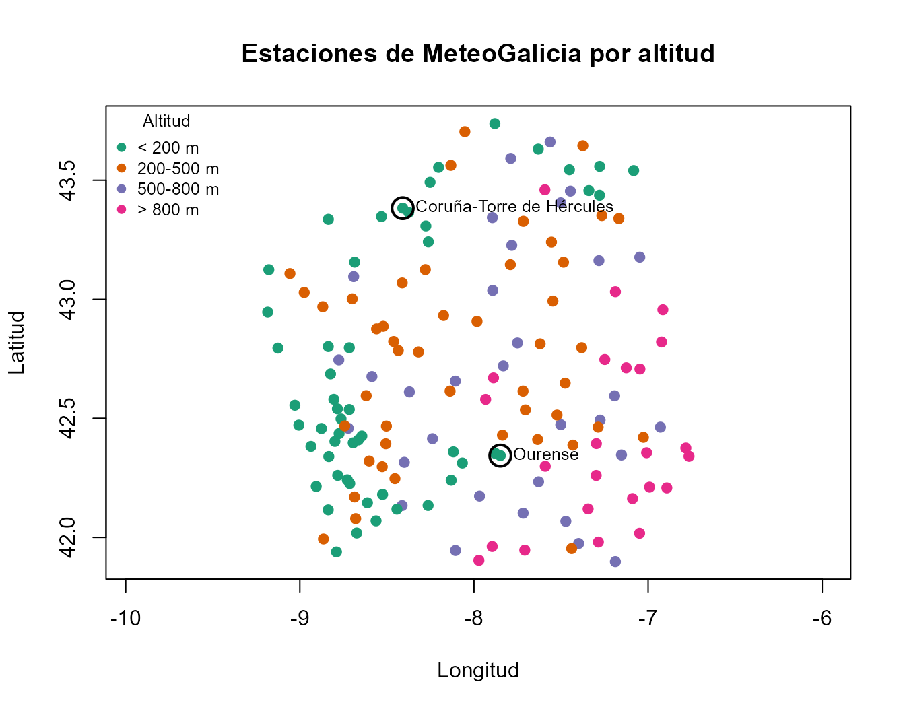
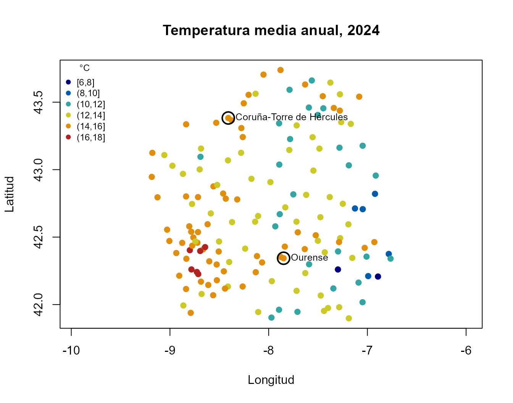
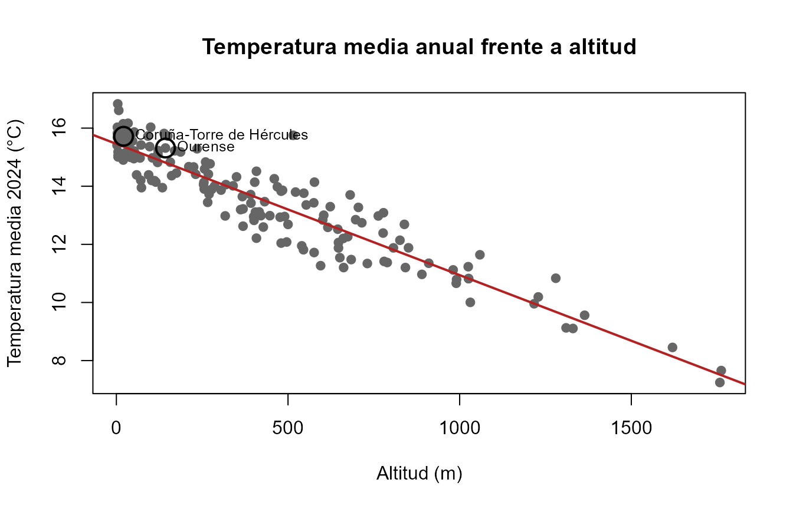
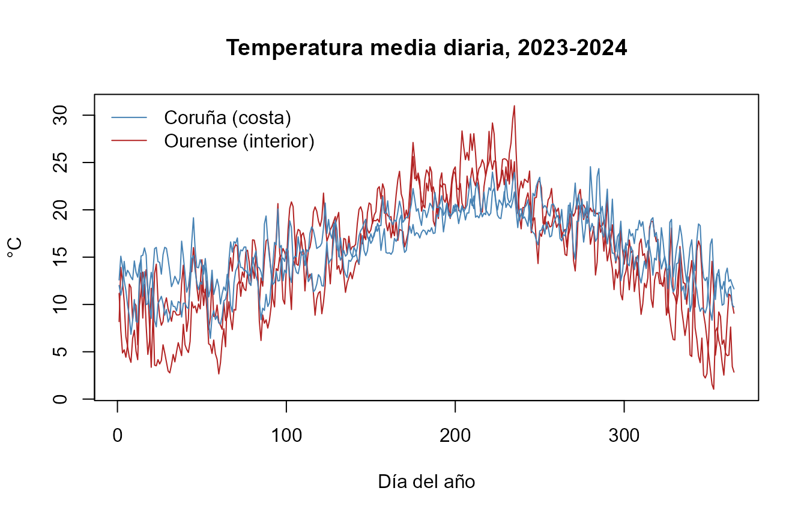
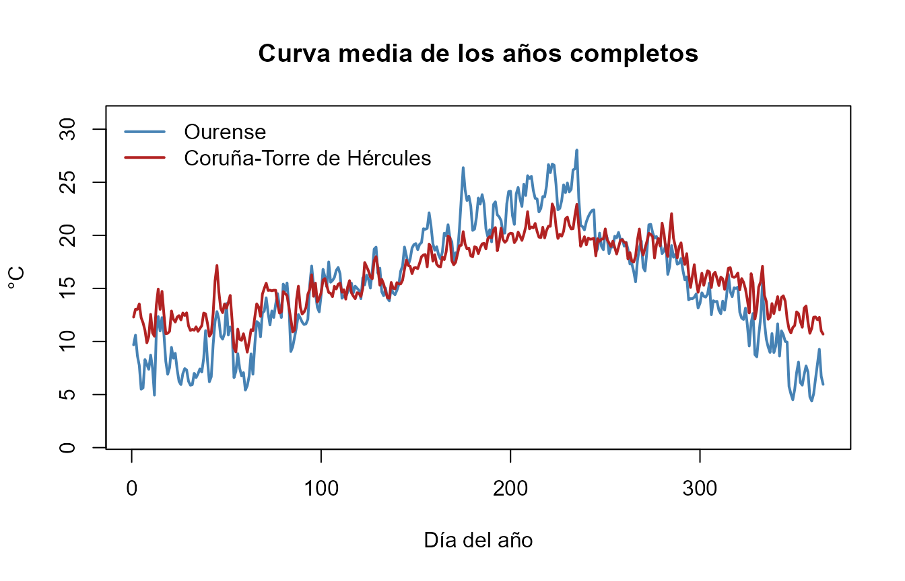

vignettes/meteogalicia-es.Rmd
meteogalicia-es.Rmd
library(meteogal2fdata)
library(fda.usc)
#> Warning: package 'MASS' was built under R version 4.6.1
#> Warning: package 'RCurl' was built under R version 4.6.1
#> Warning: package 'nlme' was built under R version 4.6.1
#> Warning: package 'knitr' was built under R version 4.6.1Esta viñeta recorre el flujo completo del paquete con datos reales de
dos estaciones con climas distintos: Coruña-Torre de
Hércules (10157, en la costa atlántica) y
Ourense (10148, en el interior, valle del
Miño).
| Paso | Función | Resultado |
|---|---|---|
| 1. Estaciones | meteogal2inventory() |
data.frame con identificador, nombre, concello,
provincia, altitud, longitud y latitud |
| 2. Descarga | meteogal2download() |
un fichero por estación y año con valores sin filtrar y sus códigos de validación |
| 3. Lectura | meteogal2df() |
data.frame diario; el argumento quality
decide qué valores se usan |
| 4. Datos funcionales |
meteogal2fdata(), meteogal2lfdata()
|
objetos fdata y ldata de
fda.usc, una curva por estación y año |
Los nombres de las variables y las descripciones de los códigos están
en inglés (temp_mean, prec,
"Valid original", …), igual en todo el paquete. Los datos
de los ejemplos se generan con data-raw/build-example.R; la
viñeta no hace consultas a MeteoGalicia al construirse.
meteogal2inventory() consulta el servicio de
MeteoGalicia que lista las estaciones en
funcionamiento. Para estaciones ya cerradas, el inventario
puede reconstruirse a partir de ficheros descargados con
meteogal2inventory(data_dir = ...).
inv <- meteogal2inventory(file = "meteogal_inventory.rds")
if (nzchar(fin)) {
inv <- read.csv(fin, colClasses = c(station_id = "character"), encoding = "UTF-8")
print(nrow(inv))
print(table(inv$province))
print(inv[inv$station_id %in% ejemplo, c("station_id", "station_name", "municipality",
"province", "altitude", "lon", "lat")])
}
#> [1] 155
#>
#> A Coruña Lugo Ourense Pontevedra
#> 36 42 34 43
#> station_id station_name municipality province altitude lon
#> 74 10148 Ourense OURENSE Ourense 143 -7.848846
#> 79 10157 Coruña-Torre de Hércules A CORUÑA A Coruña 21 -8.409202
#> lat
#> 74 42.34349
#> 79 43.38276Longitud y latitud son columnas numéricas, así que basta con
plot(). La relación de aspecto
1 / cos(43 * pi / 180) corrige la deformación horizontal de
representar grados a la latitud de Galicia. Las dos estaciones del
ejemplo se marcan con un círculo.
if (nzchar(fin)) {
ok <- is.finite(inv$lon) & is.finite(inv$lat) & is.finite(inv$altitude)
alt <- cut(inv$altitude, c(-Inf, 200, 500, 800, Inf),
labels = c("< 200 m", "200-500 m", "500-800 m", "> 800 m"))
pal <- c("#1b9e77", "#d95f02", "#7570b3", "#e7298a")
plot(inv$lon[ok], inv$lat[ok], pch = 19, col = pal[alt[ok]],
asp = 1 / cos(43 * pi / 180), xlab = "Longitud", ylab = "Latitud",
main = "Estaciones de MeteoGalicia por altitud")
ex <- inv$station_id %in% ejemplo
points(inv$lon[ex], inv$lat[ex], cex = 2.2, lwd = 2)
if (any(ex)) text(inv$lon[ex], inv$lat[ex], inv$station_name[ex], pos = 4, cex = 0.8)
legend("topleft", legend = levels(alt), col = pal, pch = 19,
bty = "n", cex = 0.8, title = "Altitud")
}
log <- meteogal2download(
start_date = "2023-01-01",
end_date = "2024-12-31",
station_ids = c("10157", "10148"),
vars = c("temp_mean", "temp_min", "temp_max", "hum_mean", "prec"),
format = "csv", # o "rds" (por defecto)
out_dir = "meteogal_daily"
)
logQué hace la descarga:
_tmp_qc/), de modo que si la descarga
se interrumpe, al repetir la misma orden solo se piden los meses que
faltan.meteogal_daily/10157/10157_2024.csv. Cada variable va
acompañada de su código: temp_mean y
qc_temp_mean, prec y qc_prec,
etc.meteogal_daily/_meteogal_manifest.csv (parámetros pedidos,
si hay códigos, quality_filter = none, fecha y hora UTC,
dirección del servicio y versión del paquete). Así queda constancia de
cómo se obtuvo cada fichero.
read.csv("meteogal_daily/_meteogal_manifest.csv")MeteoGalicia asigna a cada valor (no a cada día) un
código lnCodigoValidacion. La temperatura y la
precipitación del mismo día pueden tener códigos distintos.
meteogal_qc_codes()
#> code description default usable
#> 1 0 Not validated FALSE TRUE
#> 2 1 Valid original TRUE TRUE
#> 3 2 Suspect FALSE TRUE
#> 4 3 Erroneous FALSE FALSE
#> 5 5 Valid interpolated TRUE TRUE
#> 6 9 Not recorded FALSE FALSE| Código | Significado | Uso con el valor por defecto quality = c(1, 5)
|
|---|---|---|
| 0 | sin validar (habitual en los días más recientes) | NA |
| 1 | válido original | se usa |
| 2 | sospechoso | NA |
| 3 | erróneo | siempre NA
|
| 5 | válido, interpolado por MeteoGalicia | se usa |
| 9 | no registrado | siempre NA
|
Los códigos en el ejemplo real:
if (nzchar(f)) {
raw <- meteogal2df(data_dir = f, quality = NULL) # todo salvo 3 y 9
raw$year <- format(raw$fecha, "%Y")
print(table(station = raw$station_id, year = raw$year,
qc_temp_mean = raw$qc_temp_mean, useNA = "ifany"))
print(table(station = raw$station_id, qc_prec = raw$qc_prec, useNA = "ifany"))
}
#> , , qc_temp_mean = 1
#>
#> year
#> station 2023 2024
#> 10148 365 366
#> 10157 365 366
#>
#> qc_prec
#> station 1 2 5
#> 10148 730 1 0
#> 10157 723 0 8El criterio se elige al leer y se puede cambiar sin
volver a descargar. Cuando se descartan valores, un mensaje indica
cuántos y con qué código; el código original se conserva siempre en la
columna qc_.
if (nzchar(f)) {
q15 <- meteogal2df(data_dir = f, vars = "prec") # c(1, 5)
q1 <- meteogal2df(data_dir = f, vars = "prec", quality = 1) # solo originales
qall <- meteogal2df(data_dir = f, vars = "prec", quality = NULL) # todo salvo 3 y 9
c(`c(1, 5)` = sum(is.na(q15$prec)), `1` = sum(is.na(q1$prec)),
`NULL` = sum(is.na(qall$prec)))
}
#> [MeteoGalicia] quality = c(1, 5): values set to NA: 1 with code 2 (Suspect). Codes are kept in the qc_ columns; see meteogal_qc_codes().
#> [MeteoGalicia] quality = c(1): values set to NA: 1 with code 2 (Suspect); 8 with code 5 (Valid interpolated). Codes are kept in the qc_ columns; see meteogal_qc_codes().
#> c(1, 5) 1 NULL
#> 1 9 0Para trabajar con datos de los últimos días conviene
quality = c(0, 1, 5), porque MeteoGalicia aún no los ha
validado (código 0).
Datos faltantes. El paquete no imputa, interpola ni suaviza nada:
data.frame diario (no se inventan filas);-9999 (“sin dato”), los códigos 3 y 9 y los
valores excluidos por quality son NA;NA son puntos
NA de la rejilla de 365 días (sección 5).Los únicos valores interpolados son los que MeteoGalicia marca con código 5.
La altitud es un dato fijo de la estación; una variable
meteorológica, en cambio, hay que resumirla en un periodo y con un
criterio de calidad. data-raw/build-example.R descarga la
temperatura media diaria de 2024 de toda la red y calcula, por estación,
la media anual de los valores con quality = c(1, 5) y el
número de días utilizados (n_temp_mean_2024). Para que las
medias sean comparables, solo se representan las estaciones con al menos
330 días.
if (nzchar(ft)) {
tm <- read.csv(ft, colClasses = c(station_id = "character"), encoding = "UTF-8")
ok <- is.finite(tm$lon) & is.finite(tm$lat) & is.finite(tm$temp_mean_2024) &
tm$n_temp_mean_2024 >= 330
cat(sum(ok), "estaciones con al menos 330 días de", nrow(tm), "\n")
br <- pretty(range(tm$temp_mean_2024[ok]), n = 6)
grp <- cut(tm$temp_mean_2024, br, include.lowest = TRUE)
pal <- colorRampPalette(c("navy", "deepskyblue3", "gold", "firebrick"))(nlevels(grp))
plot(tm$lon[ok], tm$lat[ok], pch = 19, col = pal[grp[ok]],
asp = 1 / cos(43 * pi / 180), xlab = "Longitud", ylab = "Latitud",
main = "Temperatura media anual, 2024")
ex <- ok & tm$station_id %in% ejemplo
points(tm$lon[ex], tm$lat[ex], cex = 2.2, lwd = 2)
if (any(ex)) text(tm$lon[ex], tm$lat[ex], tm$station_name[ex], pos = 4, cex = 0.8)
legend("topleft", legend = levels(grp), col = pal, pch = 19,
bty = "n", cex = 0.75, title = "°C")
} else {
cat("Ejecuta data-raw/build-example.R para generar los datos del mapa.\n")
}
#> 153 estaciones con al menos 330 días de 168
Cada punto es la media de una estación; no es una superficie interpolada. Buena parte de la variación se explica por la altitud:
if (nzchar(ft)) {
plot(tm$altitude[ok], tm$temp_mean_2024[ok], pch = 19, col = "grey40",
xlab = "Altitud (m)", ylab = "Temperatura media 2024 (°C)",
main = "Temperatura media anual frente a altitud")
fit <- lm(temp_mean_2024 ~ altitude, data = tm[ok, ])
abline(fit, col = "firebrick", lwd = 2)
points(tm$altitude[ex], tm$temp_mean_2024[ex], cex = 2.2, lwd = 2)
if (any(ex)) text(tm$altitude[ex], tm$temp_mean_2024[ex], tm$station_name[ex], pos = 4, cex = 0.8)
cat("Pendiente:", round(100 * coef(fit)[2], 2), "°C por cada 100 m\n")
}
#> Pendiente: -0.45 °C por cada 100 mfdata
meteogal2fdata() convierte una variable en un objeto
fdata: una fila por estación y año (nombre
estacion_año, p. ej. 10157_2024) y 365
columnas, una por día. El 29 de febrero se elimina y los días siguientes
de los años bisiestos se desplazan, de modo que el día 60 es siempre el
1 de marzo y las curvas de todos los años son comparables punto a
punto.
if (nzchar(f)) {
fd <- meteogal2fdata(file = f, var = "temp_mean")
print(dim(fd$data))
print(rownames(fd$data))
est <- sub("_[0-9]{4}$", "", rownames(fd$data))
col <- ifelse(est == "10157", "steelblue", "firebrick")
plot(fd, col = col, lty = 1, main = "Temperatura media diaria, 2023-2024",
xlab = "Día del año", ylab = "°C")
legend("topleft", c("Coruña (costa)", "Ourense (interior)"),
col = c("steelblue", "firebrick"), lty = 1, bty = "n")
}
#> [MeteoGalicia] quality = c(1, 5): values set to NA: 1 with code 2 (Suspect). Codes are kept in the qc_ columns; see meteogal_qc_codes().
#> [1] 4 365
#> [1] "10148_2023" "10148_2024" "10157_2023" "10157_2024"
La costa tiene un ciclo anual mucho más suave: inviernos más templados y veranos más frescos que en el interior.
ldata
meteogal2lfdata() devuelve un objeto ldata
de fda.usc: un data.frame df con
una fila por estación y año, y un fdata por variable, todos
con las mismas filas y en el mismo orden. Con inventory se
completan las coordenadas y la altitud, que el servicio diario no
siempre devuelve.
if (nzchar(f)) {
ld <- meteogal2lfdata(file = f,
vars = c("temp_mean", "temp_min", "temp_max", "prec"),
inventory = if (nzchar(fi)) fi else NULL)
print(names(ld))
print(sapply(ld, NROW))
print(ld$df[, c("station_id", "station_name", "year", "altitude",
"n_days", "n_temp_mean_valid", "n_temp_mean_interp",
"n_temp_mean_masked", "n_temp_mean_missing")])
}
#> [MeteoGalicia] quality = c(1, 5): values set to NA: 1 with code 2 (Suspect). Codes are kept in the qc_ columns; see meteogal_qc_codes().
#> [1] "df" "temp_mean" "temp_min" "temp_max" "prec"
#> df temp_mean temp_min temp_max prec
#> 4 4 4 4 4
#> station_id station_name year altitude n_days
#> 10148_2023 10148 Ourense 2023 143 365
#> 10148_2024 10148 Ourense 2024 143 365
#> 10157_2023 10157 Coruña-Torre de Hércules 2023 21 365
#> 10157_2024 10157 Coruña-Torre de Hércules 2024 21 365
#> n_temp_mean_valid n_temp_mean_interp n_temp_mean_masked
#> 10148_2023 365 0 0
#> 10148_2024 365 0 0
#> 10157_2023 365 0 0
#> 10157_2024 365 0 0
#> n_temp_mean_missing
#> 10148_2023 0
#> 10148_2024 0
#> 10157_2023 0
#> 10157_2024 0Columnas de ld$df:
| Columna | Contenido |
|---|---|
station_id, station_name,
municipality, province, altitude,
lon, lat
|
estación |
year |
año de la curva |
n_days |
días con registro (de cualquier variable) |
first_date, last_date
|
primer y último registro de la curva |
fecha |
matriz de 365 columnas con la fecha de cada registro
(NA = sin registro) |
n_<v>_valid |
días cuyo valor se usa en la curva de <v>
|
n_<v>_interp |
de ellos, interpolados por MeteoGalicia (código 5) |
n_<v>_masked |
días cuyo valor se ha descartado por quality (códigos
0, 2, 3 con el valor por defecto) |
n_<v>_missing |
365 - n_<v>_valid |
qc_<v> |
matriz de 365 columnas con el código de validación de cada día |
Las matrices fecha y qc_<v> se
imprimen resumidas (una línea por curva) y con unclass() se
obtiene la matriz completa. Al ser columnas de ld$df,
subset() las recorta junto con las curvas.
if (nzchar(f)) {
print(ld$df[, c("fecha", "qc_temp_mean")])
qc <- unclass(ld$df$qc_temp_mean)
print(qc[, 1:10])
# días de 2023 en los que la temperatura de Ourense está interpolada
k <- "10148_2023"
if (k %in% rownames(qc)) print(unclass(ld$df$fecha)[k, which(qc[k, ] == 5)])
}
#> fecha qc_temp_mean
#> 10148_2023 2023-01-01..2023-12-31 (365) 1:365
#> 10148_2024 2024-01-01..2024-12-31 (365) 1:365
#> 10157_2023 2023-01-01..2023-12-31 (365) 1:365
#> 10157_2024 2024-01-01..2024-12-31 (365) 1:365
#> 1 2 3 4 5 6 7 8 9 10
#> 10148_2023 1 1 1 1 1 1 1 1 1 1
#> 10148_2024 1 1 1 1 1 1 1 1 1 1
#> 10157_2023 1 1 1 1 1 1 1 1 1 1
#> 10157_2024 1 1 1 1 1 1 1 1 1 1
#> character(0)fda.usc
Muchos métodos de fda.usc no admiten NA.
Para ellos hay que seleccionar curvas completas en la variable
que se analiza (n_days == 365 no basta: puede
haber días con registro pero sin esa variable). Rellenar los huecos es
una decisión estadística que el paquete deja al usuario.
if (nzchar(f)) {
comp <- subset(ld, ld$df$n_temp_mean_valid == 365)
cat(nrow(comp$df), "curvas completas de", nrow(ld$df), "\n")
print(comp$df[, c("station_id", "year")])
if (nrow(comp$df) >= 1) {
grupos <- split(seq_len(nrow(comp$df)), comp$df$station_id)
cols <- c("steelblue", "firebrick")[seq_along(grupos)]
medias <- lapply(grupos, function(r) func.mean(comp$temp_mean[r]))
plot(medias[[1]], col = cols[1], lwd = 2, ylim = range(comp$temp_mean$data),
main = "Curva media de los años completos", xlab = "Día del año", ylab = "\u00b0C")
for (k in seq_along(medias)[-1]) lines(medias[[k]], col = cols[k], lwd = 2)
nombres <- comp$df$station_name[match(names(grupos), comp$df$station_id)]
legend("topleft", nombres, col = cols, lwd = 2, bty = "n")
}
}
#> 4 curvas completas de 4
#> station_id year
#> 10148_2023 10148 2023
#> 10148_2024 10148 2024
#> 10157_2023 10157 2023
#> 10157_2024 10157 2024
-9999 = sin dato:
https://www.meteogalicia.gal/datosred/infoweb/meteo/docs/rss/JSON_estado_actual_es.pdf
meteospain, del que se tomaron ideas para las
viñetas: https://emf-creaf.github.io/meteospain/
Fuente de los datos: MeteoGalicia, Xunta de Galicia.